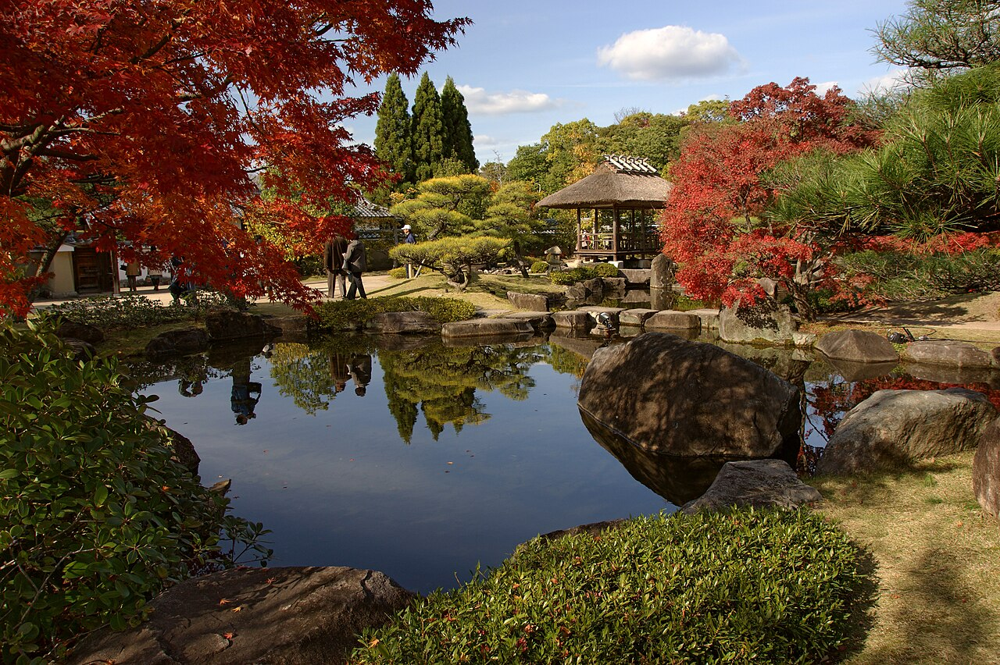

Day 3：國寶姬路城 ✕ 好古園星鰻 ✕ 大阪城夕陽點燈
JR 新快速 60 分直達 ➔ 純木造 6 層大天守閣 ➔ 好古園活水軒星鰻 ➔ 大阪城外堀水岸倒影 ➔ MIRAIZA 金光點燈
成人門票 2,500 円（共通券 2,600 円），未滿 18 歲孩童完全免費入場！
⏱️ 當日詳細行程時間軸 (Timeline)
於 JR 大阪站 4/5 號月台搭乘新快速列車，建議選擇「左側靠窗」，行經明石～舞子路段時飽覽瀨戶內海與明石海峽大橋全景！
 🏯 國寶姬路城
🏯 國寶姬路城
購買「姬路城＋好古園共通券 (2,600 円，18歲以下免費)」：
・【登頂純木造 6 層大天守閣】：脫鞋進入 400 年未倒的木造建築奇蹟，參觀落石孔、武士伏兵室與 25 公尺心柱，頂層眺望播磨平原，清風穿透木格窗（穿著防滑棉襪）。
・【三大攝影黃金機位】：站前大手前通、菱之門三國堀護城河倒影、備前丸廣場連立天守。

🍱 活水軒 ✕ 星鰻
姬路城西側步行 3 分鐘即達「好古園」（9 座武士迴遊式庭園）：
・【13:00 遲午餐】好古園內「活水軒」：大片落地玻璃窗正對著錦鯉池與石造瀑布，吹冷氣享用姬路名產「穴子魚星鰻御膳 (Anago Gozen)」（約 1,680~2,100 円）佐手打蕎麥麵天婦羅（採現場登記候位，13:00 避開排隊）。
・【13:50 庭園散策】：穿梭竹之庭與御屋敷之庭，綠蔭濃密、體感涼爽。
姬路站內可採買播州銘菓「玉椿」；搭乘新快速直達梅田，回飯店吹冷氣沖涼休息，為傍晚大阪城漫步儲備滿滿體力。
 🏯 大阪城 ✕ MIRAIZA
🏯 大阪城 ✕ MIRAIZA
・16:30~18:00 外護城河漫步：避開日間觀光團，在平靜的護城河水面拍巨大的石垣倒影與黃昏天光。
・18:00~19:30 MIRAIZA OSAKA-JO：天守閣前 1931 年歐風古建築露台，喝冰飲仰望夜間打上璀璨金光的大阪城天守閣！
返回梅田 Grand Front Osaka 7F 享用「備長 (Bincho) 鰻魚飯三吃」（炭火酥脆香濃、茶泡飯鮮美）或至 38F 敘敘苑享用高空和牛燒肉。
・備案 1 (神戶港海風)：姬路回程於「JR 三之宮站」下車，逛舊居留地洋館、神戶港塔夕陽海風，吃 Mouriya 神戶牛排。
・備案 2 (舞子海上散步道)：回程於「JR 舞子站」下車，走 47m 懸空玻璃步道看明石海峽大橋。
・備案 3 (法善寺橫丁)：搭地鐵至難波，向水掛不動尊澆水祈福，吃串の坊炸串與夫婦善哉紅豆湯。